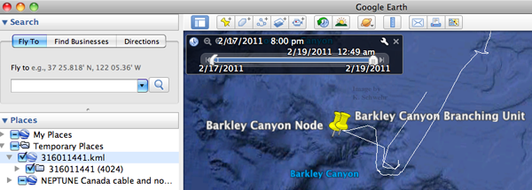

06.29.2011 19:55
MS Photosynth
I am having fun with Microsoft's
Photosyth. The iphone app is
super easy to use. The stitching ranges from great to bad with the
default setup, but the results are good enough for just messing
around.
If you are on the bridge of a ship, please give it a go and send me links!
If you are on the bridge of a ship, please give it a go and send me links!
06.27.2011 17:05
MAD - Maritime Anomaly Detection workshop
The 2011 international workshop on
Maritime Anomaly Detection now has the workshop preceedings
out.
mad2011-proceedings.pdf
Lots of AIS visualization and analysis papers, but at 45 pages for everything, there is not a lot of depth. Anyone who went want to point to better info and possibly links to presentations?
mad2011-proceedings.pdf
Lots of AIS visualization and analysis papers, but at 45 pages for everything, there is not a lot of depth. Anyone who went want to point to better info and possibly links to presentations?
06.21.2011 10:44
Frank Warmerdam moving to Google
Frank Warmerdam, who has really
pushed GDAL and Proj into becoming fantasic tools, is Joining
Google. What that means for GDal, Proj.4 (aka just "proj"),
libtiff,
geotiff and the other
tools that he contributes to is that we all as a community need to
step up to help. I'm guessing that Frank and the Googlers he is
around will be stepping up some serious development, but I am sure
there will be gaps left behind of various sizes and types.
It's going to be a really exciting summer at Google and I'm hoping to also see a lot of the NASA Ames crew (especially the Pirate Lab... Arrr! a.k.a IRG).
Flickr image from the Pirate Lab
It's going to be a really exciting summer at Google and I'm hoping to also see a lot of the NASA Ames crew (especially the Pirate Lab... Arrr! a.k.a IRG).
Flickr image from the Pirate Lab
06.20.2011 17:11
UNH IT and the Help Desk
WARNING: minor rant. This is
meant in the spirit of making things better for service users
and service providers.
See also: UNH IT to Introduce New Customer Service Model on UNH Signals "by IT Staff".
Running large networking and computing infrastructure at a place as large as UNH with ~20k people and a large physical campus is not easy. The University has a very wide range of skills in it's user community from people who are basically beginners to networking pros who are comfortable with the guts of the network. Top that off with a huge variety of device types on the network from XBoxes to large scale compute servers. I would consider my self in the top couple % of the users in terms of my understanding and power user type behavior, but certainly not the best networking person on the campus by a long shot. Heck, we have the InterOperability Lab (IOL) on campus - the folks who test all the protocols with devices. I think that I have a pretty good background to talk about what a campus should provide with its services - especially since UNH administration staff have stated that we are a "tier 1 research university" (with the worst state university funding the the 50 states). I've worked at CMU and been a student at Stanford (where I didn't make the cut for the student run help desk).
UNH has just switched from ? to BMC's Service Desk and put out a large questionnaire about how IT is doing and how they might improve. I spent the time to give them what I thought is a good explanation of thoughts. But looking at the BMC web page, I can already tell that they lack attention to detail. Their URL for Service Desk contains "22743834-121272-1370" and neither the words Service or Desk. A bad sign already. URL's need to be consumed by people and a good URL is actually very important and why my nanoblogger posts drive everyone (including me) nuts. The anchors are just time and I don't pre build the image size into the html.
The number one thing I am missing at UNH is a help desk where I can track my status and send/receive message from the team that I am working with. What I got today from the help desk when I visited in person was a slip of paper with a number hand written on it and a suggestion to call the phone help desk later if it is not resolved. The new system doesn't handle email responses. It is always unpleasant when you got a ticket closed email when your problem was not addressed in any way ( not even a "will/can't" fix - sometimes that is the only possible answer ). You only get 1000 characters to explain your problem 1 time. On my last trouble ticket, I gave them a paste bin url... to give them exactly what I was seeing: http://pastebin.com/Gi5RmsH6
I am always a fan of working together to make things better, but I have to have to the opportunity to collaborate.
This says screw you to the users of the UNH network and infrastructure. I bet that not what the IT team meant, but for IT issues, the phone is a last resort when other means of communication and searching for answers fails.
What's my trouble? I can't get a new mobile device onto the UNH wireless services... I am stuck in a weird walled garden where I can see my department email and the authorize device web server ( hastings ), but the web page on that server to get the device authorized is broken. And the help desk has no way to trouble shoot the problem in person and does not have any information on what software is providing the walled garden service. My guess, but I'm not gonna take the time to go look to confirm, is that they are using flash to handle the UI with an updating progress bar and iOS has no flash.
I wish universities would ban together on this kind of software and produce software, techniques, and documentation that work for the who community.
I really don't want to know how much money UNH wasted buying this software and getting support contracts. Both of the times I talked to people who were using the system, they had to ask me to hold on while the system was locked up.
And where is the knowledge base that is built up from working on these trouble tickets? I am sure there are many items per day that get figured out that should be posted to a feed or wiki. The UNH help desk could be our partners in building a better UNH rather than a road block. They are making a hard job much harder.
It's great that we have: Unplanned Service Interruptions, but why is the URL have "index.cfm?ID=F572759E-D0A6-1784-F9F4A6AF8D72E11D". Just like my complaint about BMC... just don't.
Update 2011-Jun-21: And the brand new UNH HR software can't cope with the situation where an employee transitions from one supervisor to another. In that case, the original supervisor needs to be able to add evaluations on past performance. The new supervisor needs to be able to do the same and also work on the goals section. The same problem also prevents the system from handling multiple supervisors. Only one gets write permission. Who writes the requirements from this software and why are we paying them?
See also: UNH IT to Introduce New Customer Service Model on UNH Signals "by IT Staff".
Running large networking and computing infrastructure at a place as large as UNH with ~20k people and a large physical campus is not easy. The University has a very wide range of skills in it's user community from people who are basically beginners to networking pros who are comfortable with the guts of the network. Top that off with a huge variety of device types on the network from XBoxes to large scale compute servers. I would consider my self in the top couple % of the users in terms of my understanding and power user type behavior, but certainly not the best networking person on the campus by a long shot. Heck, we have the InterOperability Lab (IOL) on campus - the folks who test all the protocols with devices. I think that I have a pretty good background to talk about what a campus should provide with its services - especially since UNH administration staff have stated that we are a "tier 1 research university" (with the worst state university funding the the 50 states). I've worked at CMU and been a student at Stanford (where I didn't make the cut for the student run help desk).
UNH has just switched from ? to BMC's Service Desk and put out a large questionnaire about how IT is doing and how they might improve. I spent the time to give them what I thought is a good explanation of thoughts. But looking at the BMC web page, I can already tell that they lack attention to detail. Their URL for Service Desk contains "22743834-121272-1370" and neither the words Service or Desk. A bad sign already. URL's need to be consumed by people and a good URL is actually very important and why my nanoblogger posts drive everyone (including me) nuts. The anchors are just time and I don't pre build the image size into the html.
The number one thing I am missing at UNH is a help desk where I can track my status and send/receive message from the team that I am working with. What I got today from the help desk when I visited in person was a slip of paper with a number hand written on it and a suggestion to call the phone help desk later if it is not resolved. The new system doesn't handle email responses. It is always unpleasant when you got a ticket closed email when your problem was not addressed in any way ( not even a "will/can't" fix - sometimes that is the only possible answer ). You only get 1000 characters to explain your problem 1 time. On my last trouble ticket, I gave them a paste bin url... to give them exactly what I was seeing: http://pastebin.com/Gi5RmsH6
I am always a fan of working together to make things better, but I have to have to the opportunity to collaborate.
This says screw you to the users of the UNH network and infrastructure. I bet that not what the IT team meant, but for IT issues, the phone is a last resort when other means of communication and searching for answers fails.
What's my trouble? I can't get a new mobile device onto the UNH wireless services... I am stuck in a weird walled garden where I can see my department email and the authorize device web server ( hastings ), but the web page on that server to get the device authorized is broken. And the help desk has no way to trouble shoot the problem in person and does not have any information on what software is providing the walled garden service. My guess, but I'm not gonna take the time to go look to confirm, is that they are using flash to handle the UI with an updating progress bar and iOS has no flash.
I wish universities would ban together on this kind of software and produce software, techniques, and documentation that work for the who community.
I really don't want to know how much money UNH wasted buying this software and getting support contracts. Both of the times I talked to people who were using the system, they had to ask me to hold on while the system was locked up.
And where is the knowledge base that is built up from working on these trouble tickets? I am sure there are many items per day that get figured out that should be posted to a feed or wiki. The UNH help desk could be our partners in building a better UNH rather than a road block. They are making a hard job much harder.
It's great that we have: Unplanned Service Interruptions, but why is the URL have "index.cfm?ID=F572759E-D0A6-1784-F9F4A6AF8D72E11D". Just like my complaint about BMC... just don't.
Update 2011-Jun-21: And the brand new UNH HR software can't cope with the situation where an employee transitions from one supervisor to another. In that case, the original supervisor needs to be able to add evaluations on past performance. The new supervisor needs to be able to do the same and also work on the goals section. The same problem also prevents the system from handling multiple supervisors. Only one gets write permission. Who writes the requirements from this software and why are we paying them?
It only allows 1 Evaluation Supervisor, but also allows for up to 3 levels of Evaluation Reviewer (the Reviewers can't comment or rate/rank, only view the information the Employee and Evaluation Supervisors have entered).Seriously?
06.15.2011 14:39
fink and update-alternatives
This article is excessively long and
runs out of steam near the bottom when things are the most
important. Sorry.
Update-alternatives (u-a, src) is a style for handling multiple versions of one software package or multiple software packages that provide the same file. It is a part of the Debian Linux project's dpkg (alt-link) manager for software. This program has been around since 1995, but I only started using it some time around 2005 in fink. This program has confused quite a few people over the years and I haven't seen too much good documentation, so here is my take for understanding u-a from a fink packager and user's perspective. First a quick link to other documentation:
Debian Administration has an article called Using the Debian alternatives system that uses the "editor" example that I was thinking about as a first case to illustrate the concept. But really, the editor example is bad. You should not be forcing a global editor example.
The is a man page, but I did not find it very helpful and there were no examples.
Here is my key use case for u-a: I often have python packages in fink that we want to have available in the many "variants" of python. Right now that range is python 2.4, 2.5, 2.6, 2.7, 3.1, and 3.2. If that package has executable programs, we want to default to picking the program from the newest python possible (software isn't all ready for python 3.x yet), but let the user pick a preference if necessary. A typical use case for the user picking a specific version is where a computer is setup with a large project and wants to stick to a specific version of python and associated tools (say 2.6). However, the developers on the machine want to be able to experiment with newer versions of python.
I am going to use the gpsd package as my example. It comes with python modules for clients to access a gpsd server that is managing GPS or AIS devices. gpsd has a number of programs that are installed. Some of these are written in python. For example, "gpscat" is written in python. It must have a gpsd-py installed, but which one? If I install the python 2.6 version and that installs a program in /sw/bin/gpscat, I can't also have gpsd-py for python 2.7 also installed. I might need to be able to access either. Let's take a quick peak at the gpsd packages available in fink:
In earlier days of python, the strategy for handling these binaries was to have a "-bin" package that you could install. If you installed a particular one, it would force out any other colliding bin. This worked sometimes, but things got really screwy with dependencies. And what if you needed to specifically use two different versions at the same for some reason? Here is the process:
If you want to see how a package is actually set up for Conflicts and Replaces, try something like this:
The new way is to use u-a. I will walk you through it first from the user perspective. For u-a, the gpsd python executables are bookmarked under gpscat. I realize this is confusing and at the end I will talk about switching it to gpsd-py. First we need to learn how to look around the system, but to do that, we need at least one version of gpsd-py installed.
The next key point is the priority of "26". In fink, we have a convention that the python version (major.minor) without the "." is the priority. Fink will set automatically pick a newer ("better") version of these files if we install a higher version python. Let's try installing the gpsd-py27 package and see what happens. Note that I've add –verbose to the update-alternative command in the gpsd-py.info package. That will make the fink install much more talkative.
Now is a great time to check out the symbolic links. At first look, it seems like a twisty maze, but it actually works quite well. Make sure that you have both the 26 and 27 versions of gpsd and the gpsd main package installed.
The hard part is getting the fink info file for gpsd's python package correct. Here is a walk through of the issues with a focus on the python specific handling of alternatives.
First, we have to tell fink that this is going to be a python package. We are going to use features that were not in the original fink "Info" format, so we wrap the whole setup in "Info2"
The PostInstScript is run right after the files from the deb package are loaded. In this "–install" command the 4 items in the same line setup the tree of this alternative. The first item is the path to the file that will server as the master. The second item ("gpsd-py") is the name that it will aliased to. The 3rd item is the source file. Finally, the last item is an integer number that is the priority. Here is what the actual command looks like that is run:
These files will change along with the master file in a follow-the-leader style. They are the target url, the name, and the path to the source.
With fink, you have to keep a tidy house. That means that you need to get rid of the symbolic links after a package is removed. We can do that in a a PreRmScript that gets rid of the links (and redirects them if there is a fallback).
Update-alternatives (u-a, src) is a style for handling multiple versions of one software package or multiple software packages that provide the same file. It is a part of the Debian Linux project's dpkg (alt-link) manager for software. This program has been around since 1995, but I only started using it some time around 2005 in fink. This program has confused quite a few people over the years and I haven't seen too much good documentation, so here is my take for understanding u-a from a fink packager and user's perspective. First a quick link to other documentation:
Debian Administration has an article called Using the Debian alternatives system that uses the "editor" example that I was thinking about as a first case to illustrate the concept. But really, the editor example is bad. You should not be forcing a global editor example.
The is a man page, but I did not find it very helpful and there were no examples.
Here is my key use case for u-a: I often have python packages in fink that we want to have available in the many "variants" of python. Right now that range is python 2.4, 2.5, 2.6, 2.7, 3.1, and 3.2. If that package has executable programs, we want to default to picking the program from the newest python possible (software isn't all ready for python 3.x yet), but let the user pick a preference if necessary. A typical use case for the user picking a specific version is where a computer is setup with a large project and wants to stick to a specific version of python and associated tools (say 2.6). However, the developers on the machine want to be able to experiment with newer versions of python.
I am going to use the gpsd package as my example. It comes with python modules for clients to access a gpsd server that is managing GPS or AIS devices. gpsd has a number of programs that are installed. Some of these are written in python. For example, "gpscat" is written in python. It must have a gpsd-py installed, but which one? If I install the python 2.6 version and that installs a program in /sw/bin/gpscat, I can't also have gpsd-py for python 2.7 also installed. I might need to be able to access either. Let's take a quick peak at the gpsd packages available in fink:
fink list gpsdThe results:
| Package | Version | Description |
|---|---|---|
| gpsd | 2.96bis-1 | Daemon that monitors one or more GPS/AIS receivers |
| gpsd-dev | 2.96bis-1 | Headers and libraries for gpsd |
| gpsd-py26 | 2.96bis-1 | Gpsd client and programs GPS/AIS receivers in python |
| gpsd-py27 | 2.96bis-1 | Gpsd client and programs GPS/AIS receivers in python |
| gpsd-shlibs | 2.96bis-1 | Shared libraries for gpsd |
The old way
In earlier days of python, the strategy for handling these binaries was to have a "-bin" package that you could install. If you installed a particular one, it would force out any other colliding bin. This worked sometimes, but things got really screwy with dependencies. And what if you needed to specifically use two different versions at the same for some reason? Here is the process:
fink list pylint
Information about 10325 packages read in 1 seconds.
i pylint-py25 0.23.0-1 Analyzes Python code for bugs and quality
pylint-py25-bin 0.23.0-1 Analyzes Python code - main binary
i pylint-py26 0.23.0-1 Analyzes Python code for bugs and quality
pylint-py26-bin 0.23.0-1 Analyzes Python code - main binary
i pylint-py27 0.23.0-1 Analyzes Python code for bugs and quality
pylint-py27-bin 0.23.0-1 Analyzes Python code - main binary
Now installing pylint-py26-bin works:
fink install pylint-py26-bin Information about 10325 packages read in 1 seconds. The following package will be installed or updated: pylint-py26-bin Reading buildlock packages... /sw/bin/dpkg-lockwait -i /sw/fink/di [ snip ] Selecting previously deselected package pylint-py26-bin. (Reading database ... 185854 files and directories currently installed.) Unpacking pylint-py26-bin (from .../pylint-py26-bin_0.23.0-1_darwin-i386.deb) ... Setting up pylint-py26-bin (0.23.0-1) ...However, installing pylint-py27-bin blows up!
fink install pylint-py27-bin Information about 10325 packages read in 1 seconds. The following package will be installed or updated: pylint-py27-bin Reading buildlock packages... /sw/bin/dpkg-lockwait -i /sw/fink/dists/unstable/main/binary-darwin-i386/devel/pylint-py27-bin_0.23.0-1_darwin-i386.deb Selecting previously deselected package pylint-py27-bin. (Reading database ... 185862 files and directories currently installed.) Unpacking pylint-py27-bin (from .../pylint-py27-bin_0.23.0-1_darwin-i386.deb) ... /sw/bin/dpkg: error processing /sw/fink/dists/unstable/main/binary-darwin-i386/devel/pylint-py27-bin_0.23.0-1_darwin-i386.deb (--install): trying to overwrite '/sw/bin/pylint', which is also in package pylint-py26-bin Errors were encountered while processing: /sw/fink/dists/unstable/main/binary-darwin-i386/devel/pylint-py27-bin_0.23.0-1_darwin-i386.deb ### execution of /sw/bin/dpkg-lockwait failed, exit code 1 Failed: can't install package pylint-py27-bin-0.23.0-1Whoops! The author of the pylint package (me!) forgot to add statements to the package that you can't have ("Conflicts") both pylint-py26-bin and pylint-py27-bin installed at the same time. I also forgot to add the Replace statement that tells fink and the debian package tools that the can be swapped for each other.
# So totally broken! Conflicts: %N-py25-bin, %N-py24-bin Replaces: %N-py25, %N-py24-binI went off and fixed that oversight, but really, I need to switch the package to stop using this old style. The new file looks like this ( and I had to add one to the Revision field).
Conflicts: pylint-py27-bin, pylint-py26-bin, pylint-py25-bin Replaces: pylint-py27-bin, pylint-py26-bin, pylint-py25-binI then have to do a fink update-all. Now I should be able to install pylint-py26-bin with pylint-py27-bin.
fink update-all
[ snip ]
fink list pylint
Information about 10325 packages read in 2 seconds.
i pylint-py25 0.23.0-2 Analyzes Python code for bugs and quality
pylint-py25-bin 0.23.0-2 Analyzes Python code - main binary
i pylint-py26 0.23.0-2 Analyzes Python code for bugs and quality
i pylint-py26-bin 0.23.0-2 Analyzes Python code - main binary
i pylint-py27 0.23.0-2 Analyzes Python code for bugs and quality
pylint-py27-bin 0.23.0-2 Analyzes Python code - main binary
fink install pylint-py26-bin
[ snip ]
Setting up pylint-py26-bin (0.23.0-2) ...
fink install pylint-py27-bin
[ snip ]
dpkg: considering removing pylint-py26-bin in favour of pylint-py27-bin ...
dpkg: yes, will remove pylint-py26-bin in favour of pylint-py27-bin.
Unpacking pylint-py27-bin (from .../pylint-py27-bin_0.23.0-2_darwin-i386.deb) ...
Setting up pylint-py27-bin (0.23.0-2) ...
It worked, but every time the variants change, we have to edit the
python version lists in multiple places. It's error prone and just
a pain!If you want to see how a package is actually set up for Conflicts and Replaces, try something like this:
for deb in /sw/fink/debs/pylint-py2[67]-bin*.deb; do echo "$deb" dpkg -I $deb | egrep 'Conflicts|Replaces' doneWhich shows you that they look okay now:
/sw/fink/debs/pylint-py26-bin_0.23.0-2_darwin-i386.deb Replaces: pylint-py27-bin, pylint-py25-bin Conflicts: pylint-py27-bin, pylint-py25-bin /sw/fink/debs/pylint-py27-bin_0.23.0-2_darwin-i386.deb Replaces: pylint-py26-bin, pylint-py25-bin Conflicts: pylint-py26-bin, pylint-py25-binBut before, they were totally messed up and it was this way for years!
/sw/fink/debs/pylint-py26-bin_0.23.0-1_darwin-i386.deb Replaces: pylint-py26-py25, pylint-py26-py24-bin Conflicts: pylint-py26-py25-bin, pylint-py26-py24-bin /sw/fink/debs/pylint-py27-bin_0.23.0-1_darwin-i386.deb Replaces: pylint-py27-py25, pylint-py27-py24-bin Conflicts: pylint-py27-py25-bin, pylint-py27-py24-bin
New way - use update-alternatives
The new way is to use u-a. I will walk you through it first from the user perspective. For u-a, the gpsd python executables are bookmarked under gpscat. I realize this is confusing and at the end I will talk about switching it to gpsd-py. First we need to learn how to look around the system, but to do that, we need at least one version of gpsd-py installed.
fink install gpsd-py26 [ snip ] # <- I will use this to show were I've removed textWe need to find the name of the package (pretend I didn't just tell you that it is gpscat). Take a look in u-a's database. This is how you can find out from the packaging system where things are.
# Where is the u-a program? type update-alternatives update-alternatives is hashed (/sw/sbin/update-alternatives) # Which package owns the update-alternatives program? dpkg -S /sw/sbin/update-alternatives dpkg: /sw/sbin/update-alternatives # What files are in the package related to u-a? dpkg -L dpkg | egrep -i 'update|alternatives' /sw/etc/alternatives /sw/etc/alternatives/README /sw/sbin/update-alternatives [ snip ] /sw/share/man/man8/update-alternatives.8 /sw/share/man/pt_BR/man8/update-alternatives.8 /sw/var/lib/dpkg/alternatives /sw/var/lib/dpkg/updatesThe 2nd to the last line has our answer (it is also in "man update-alternatives"): /sw/var/lib/dpkg/alternatives
ls -l /sw/var/lib/dpkg/alternatives/*gps* -rw-r--r-- 1 root admin 299 Jun 15 12:56 /sw/var/lib/dpkg/alternatives/gpsd-pyHere is the overview of update-alternatives:
update-alternatives --help
Debian update-alternatives 1.10.21.
[snip]
Usage: update-alternatives --install <link> <name> <path> <priority>
[--slave <link> <name> <path>] ...
update-alternatives --remove <name> <path>
update-alternatives --remove-all <name>
update-alternatives --auto <name>
update-alternatives --display <name>
update-alternatives --list <name>
update-alternatives --config <name>
update-alternatives --set <name> <path>
update-alternatives --all
<name> is the name in /etc/alternatives.
<path> is the name referred to.
<link> is the link pointing to /etc/alternatives/<name>.
<priority> is an integer; options with higher numbers are chosen.
Options: --verbose|--quiet --test --help --version
--altdir <directory> --admindir <directory>
We can use the display and list options to examine
gpsd's alternatives. List is simpler, so start with that.
update-alternatives --list gpsd-py
/sw/bin/gpscat-py26
update-alternatives --display gpsd-py
gpsd-py - status is auto.
link currently points to /sw/bin/gpscat-py26
/sw/bin/gpscat-py26 - priority 26
slave gpsfake: /sw/bin/gpsfake-py26
slave xgps: /sw/bin/xgps-py26
slave gpsprof: /sw/bin/gpsprof-py26
slave xgpsspeed: /sw/bin/xgpsspeed-py26
Current 'best' version is /sw/bin/gpscat-py26.
That's a lot of information. First, the "auto" says that fink is
allowed to move up to a newer version of the alternatives if one
comes along. If it were "manual", that means it is up to you as a
user to change the symbolic links.The next key point is the priority of "26". In fink, we have a convention that the python version (major.minor) without the "." is the priority. Fink will set automatically pick a newer ("better") version of these files if we install a higher version python. Let's try installing the gpsd-py27 package and see what happens. Note that I've add –verbose to the update-alternative command in the gpsd-py.info package. That will make the fink install much more talkative.
fink install gpsd-py27
The following package will be installed or updated:
gpsd-py27
Reading buildlock packages...
/sw/bin/dpkg-lockwait -i /sw/fink/dists/unstable/main/binary-darwin-i386/sci/gpsd-py27_2.96bis-2_darwin-i386.deb
Selecting previously deselected package gpsd-py27.
(Reading database ... 185921 files and directories currently installed.)
Unpacking gpsd-py27 (from .../gpsd-py27_2.96bis-2_darwin-i386.deb) ...
Setting up gpsd-py27 (2.96bis-2) ...
update-alternatives --verbose --install /sw/bin/gpscat gpsd-py /sw/bin/gpscat-py27 27 --slave /sw/bin/gpsfake gpsfake /sw/bin/gpsfake-py27
Checking available versions of gpsd-py, updating links in /sw/etc/alternatives ...
(You may modify the symlinks there yourself if desired - see 'man ln'.)
Updating gpsd-py (/sw/bin/gpscat) to point to /sw/bin/gpscat-py27.
Updating gpsfake (/sw/bin/gpsfake) to point to /sw/bin/gpsfake-py27.
Updating xgps (/sw/bin/xgps) to point to /sw/bin/xgps-py27.
Updating gpsprof (/sw/bin/gpsprof) to point to /sw/bin/gpsprof-py27.
Updating xgpsspeed (/sw/bin/xgpsspeed) to point to /sw/bin/xgpsspeed-py27.
What does update-alternatives display give us?
update-alternatives --display gpsd-py
gpsd-py - status is auto.
link currently points to /sw/bin/gpscat-py27
/sw/bin/gpscat-py26 - priority 26
slave gpsfake: /sw/bin/gpsfake-py26
slave xgps: /sw/bin/xgps-py26
slave gpsprof: /sw/bin/gpsprof-py26
slave xgpsspeed: /sw/bin/xgpsspeed-py26
/sw/bin/gpscat-py27 - priority 27
slave gpsfake: /sw/bin/gpsfake-py27
slave xgps: /sw/bin/xgps-py27
slave gpsprof: /sw/bin/gpsprof-py27
slave xgpsspeed: /sw/bin/xgpsspeed-py27
Current 'best' version is /sw/bin/gpscat-py27.
Now you can see both the py26 alternative at priority 26 and the
py27 alternative installed because is has a priority of 27. If we
don't like the python 2.7 version, we can easily back off:
fink remove gpsd-py27
/sw/bin/dpkg-lockwait --remove gpsd-py27
Removing gpsd-py27 ...
Checking available versions of gpsd-py, updating links in /sw/etc/alternatives ...
(You may modify the symlinks there yourself if desired - see 'man ln'.)
Alternative /sw/share/doc/gpsd-py27 for gpsd-py not registered, not removing.
Leaving gpsd-py (/sw/bin/gpscat) pointing to /sw/bin/gpscat-py27.
Leaving gpsfake (/sw/bin/gpsfake) pointing to /sw/bin/gpsfake-py27.
Leaving xgps (/sw/bin/xgps) pointing to /sw/bin/xgps-py27.
Leaving gpsprof (/sw/bin/gpsprof) pointing to /sw/bin/gpsprof-py27.
Leaving xgpsspeed (/sw/bin/xgpsspeed) pointing to /sw/bin/xgpsspeed-py27.
Exploring the symlinks created by u-a
Now is a great time to check out the symbolic links. At first look, it seems like a twisty maze, but it actually works quite well. Make sure that you have both the 26 and 27 versions of gpsd and the gpsd main package installed.
fink install gpsd-py26 gpsd-py27 gpsdNow we can start in /sw/bin and look at the mix of C/C++ binaries and python scripts in gpsd.
cd /sw/bin ls -l *gps* | cut -c 1-11,44- -rwxr-xr-x cgps lrwxr-xr-x gpscat -> /sw/etc/alternatives/gpscat -rwxr-xr-x gpscat-py26 -rwxr-xr-x gpscat-py27 -rwxr-xr-x gpsctl -rwxr-xr-x gpsdecode lrwxr-xr-x gpsfake -> /sw/etc/alternatives/gpsfake -rwxr-xr-x gpsfake-py26 -rwxr-xr-x gpsfake-py27 -rwxr-xr-x gpsmon -rwxr-xr-x gpspipe lrwxr-xr-x gpsprof -> /sw/etc/alternatives/gpsprof -rwxr-xr-x gpsprof-py26 -rwxr-xr-x gpsprof-py27 -rwxr-xr-x lcdgps lrwxr-xr-x xgps -> /sw/etc/alternatives/xgps -rwxr-xr-x xgps-py26 -rwxr-xr-x xgps-py27 lrwxr-xr-x xgpsspeed -> /sw/etc/alternatives/xgpsspeed -rwxr-xr-x xgpsspeed-py26 -rwxr-xr-x xgpsspeed-py27You can see that for programs like cgps, there is only one file. However for gpsfake, which is a python script, there are 3 files:
file gpsfake* gpsfake: symbolic link to'/sw/etc/alternatives/gpsfake' gpsfake-py26: a /sw/bin/python2.6 script text executable gpsfake-py27: a /sw/bin/python2.7 script text executableThe "gpsfake" program is the default program, but it's actually a symbolic link that we can track through the system. We are going to find that it is indirectly linked to gpsfake-py27, which is the highest priority alternative to gpsfake.
cd /sw/etc/alternatives ls -l *gpsfake* lrwxr-xr-x 1 root admin 22 Jun 15 12:59 gpsfake -> /sw/bin/gpsfake-py27
Setting things up in fink for update-alternatives
The hard part is getting the fink info file for gpsd's python package correct. Here is a walk through of the issues with a focus on the python specific handling of alternatives.
First, we have to tell fink that this is going to be a python package. We are going to use features that were not in the original fink "Info" format, so we wrap the whole setup in "Info2"
Info2: << [ snip ] # Info2 <<Then we have to make the name depend on the type of python and to list the "variant" types of python that are allowed:
Package: gpsd-py%type_pkg[python] Type: python (2.6 2.7)Then, in the install portion (InstallScript) of the info file, we have to rename the python scripts to have a "26" or "27" after then:
for file in gpscat gpsfake gpsprof xgps xgpsspeed ; do
mv %i/bin/${file} %i/bin/${file}-py%type_pkg[python]
done
We then need to add the alternatives handling in a script that runs
just after the package is installed. I am using the documentation
directory to provide the "gpsd-py" name to alternatives, as there
is not actual "gpsd" or "gpsd-py" file that I can use to setup the
alternatives.
PostInstScript: <<
update-alternatives --verbose
--install %p/bin/gpscat gpsd-py %p/bin/gpscat-py%type_pkg[python] %type_pkg[python] \
--slave %p/bin/gpsfake gpsfake %p/bin/gpsfake-py%type_pkg[python] \
--slave %p/bin/gpsprof gpsprof %p/bin/gpsprof-py%type_pkg[python] \
# [ snip ]
<<
PreRmScript: <<
First the master:The PostInstScript is run right after the files from the deb package are loaded. In this "–install" command the 4 items in the same line setup the tree of this alternative. The first item is the path to the file that will server as the master. The second item ("gpsd-py") is the name that it will aliased to. The 3rd item is the source file. Finally, the last item is an integer number that is the priority. Here is what the actual command looks like that is run:
update-alternatives --verbose
--install /sw/bin/gpscat gpsd-py /sw/bin/gpscat-py27 27 \
--slave /sw/bin/gpsfake gpsfake /sw/bin/gpsfake-py27 \
# [ snip ]
Then come all the slaves:These files will change along with the master file in a follow-the-leader style. They are the target url, the name, and the path to the source.
Cleanup up after removing the package
With fink, you have to keep a tidy house. That means that you need to get rid of the symbolic links after a package is removed. We can do that in a a PreRmScript that gets rid of the links (and redirects them if there is a fallback).
PreRmScript: << if [ $1 != "upgrade" ]; then update-alternatives --verbose --remove gpsd-py %p/bin/gpscat-py%type_pkg[python] fi <<Here is how things look through the removal process:
ls -l /sw/var/lib/dpkg/alternatives/*gps* | wc -l 1 ls /sw/bin/*gps* | wc -l 21 ls -l /sw/etc/alternatives/*gps* | wc -l 5Now remove gpsd-py27:
fink remove gpsd-py27 ls -l /sw/var/lib/dpkg/alternatives/*gps* | wc -l 1 ls /sw/bin/*gps* | wc -l 16 ls -l /sw/etc/alternatives/*gps* | wc -l 5Now remove the rest:
fink remove gpsd gpsd-py26 ls -l /sw/var/lib/dpkg/alternatives/*gps* | wc -l 0 ls /sw/bin/*gps* | wc -l 0 ls -l /sw/etc/alternatives/*gps* | wc -l 0 update-alternatives --display gpsd-py No alternatives for gpsd-py.Hopefully you feel a little more comfortable with update-alternatives after reading through the above, but I worry that people will just get more turned around. I encourage others to do their own writeups to improve apon the documentation and examples.
06.14.2011 14:45
Trawling neptune nodes
Trawler tears off part of underwater observatory
For an event that happened on Feb 18th, it's a shame that I'm the first one to show what may have happened.
An unknown fishing trawler veered off track and knocked out a platform of the CAD 100-million (USD 102.6 million) Neptune Canada observatory on the sea floor off British Columbia's (BC) Vancouver Island. The platform carried costly titanium instruments used for monitoring events ranging from earthquakes to tsunamis and was hit as the trawler pulled its colossal net across the sea floor in an off-limit area. ...I was privy to a conversation about this event, so I took a look in my data store around the event. I found that a vessel went over the nodes at the right time. There is work for others to do with this data to get the whole picture of what happened, but it shows what can be done with 15 minutes, the right data, and the right software. I used noaadata to build a kml and Google Earth to view it.
For an event that happened on Feb 18th, it's a shame that I'm the first one to show what may have happened.

06.14.2011 11:42
Switching between 32-bit and 64-bit versions of fink
Hopefully we will soon get to the
world of only having to worry about 64-bit code on the Mac, but
there are still too many programs that are not 32 and 64 bit clean.
Seems crazy as I think is was ~1993 when I first started using
64-bit machines: OSF/1 aka Tru64 on
the Dec Alpha workstations in Sweet Hall at
Stanford.
Here is how I have my fink installs setup so that I can have both on the same machine.
I first do two source installs of fink. The first, I tell to be 32-bit and to install in /sw32, rather than /sw. The second is 64-bit and installs in /sw64. I then make a symbolic link (ln -s) from /sw to /sw32, just in case there are fink programs that aren't properly handling the location of the fink tree or if there are other scripts that hardcode the /sw (boo!).
I then added two aliases to my .bashrc that start the switch process:
Here is how I have my fink installs setup so that I can have both on the same machine.
I first do two source installs of fink. The first, I tell to be 32-bit and to install in /sw32, rather than /sw. The second is 64-bit and installs in /sw64. I then make a symbolic link (ln -s) from /sw to /sw32, just in case there are fink programs that aren't properly handling the location of the fink tree or if there are other scripts that hardcode the /sw (boo!).
I then added two aliases to my .bashrc that start the switch process:
alias fink32='source $HOME/bin/fink32' alias fink64='source $HOME/bin/fink64'In my ~/bin directory, I have the three files that do the work of unsetting the old environment and get fink to set up the new environment. First is the unfink script. You will likely have to check for other environment variables that need to be unset. Perhaps I should be cleaver and push the entire environment somewhere when I first create a shell and then pop that entire environment back. I leave that to someone else to do.
export PATH=/usr/bin:/bin:/usr/sbin:/sbin:/usr/local/bin:/usr/X11/bin:$HOME/bin:/usr/local/bin:/Developer/tools:/usr/X11R6/bin export MANPATH=/usr/share/man:/usr/X11/man:/usr/X11R6/man unset CLASSPATH unset PERL5LIB unset QTDIR unset ANT_HOME unset XAPPLRESDIR unset SGML_CATALOG_FILES unset XDG_CONFIG_DIRS unset XML_CATALOG_FILES unset GDL_PATH unset XDG_DATA_DIRS unset R_HOME unset INFOPATHFinally, here is the ~/bin/fink64 script:
source /Users/schwehr/bin/unfink . /sw64/bin/init.shThere is one just like it in ~/bin/fink32. Then just make sure it works by checking where fink comes from:
type -a fink fink is /sw32/bin/fink fink64 type -a fink fink is /sw64/bin/fink fink32 type -a fink fink is /sw32/bin/finkNot elegant, but it gets the job done.
06.14.2011 09:54
Corpse Flower at University of Washington
Giant 'Corpse
Flower' Draws Hundreds; Focus Of New UW Research [KIRO 7] See
also: Riffel
Lab on Facebook.
They were even able to capture a thermal image. I never would have guessed that there would be a hot spot on a plant.
Note: Jeff Riffell is my brother-in-law
This is the first time scientists have been able to sample the scent of the corpse flower. Riffell Lab graduate student, Kelsey Byers worked through the night to sample the pungent odors. Once the scent collection is complete, the scientists will identify the chemicals which make the flower stink. They will then compare the smell to the stench from an actual corpse. The Riffell Lab hopes its work could eventually lead to improved yields from crops by increasing crop pollination. The research could also lead to a better understanding of how to combat crop pests. According to the Riffell Lab, the smell will start to fade through the day. The flower will die in a few days. The corpse flower blooms about every five years. Hundreds of people have been turning out to smell the flower. At times, the line at the Biology Department Botanical Garden Greenhouse has stretched down the hall and out the door.Jeff Riffell and his lab do some pretty wild stuff with chemical sensing. I got to tour the moth lab that Jeff postdoc'ed in and was blown away with what he is able to do. It's a bummer that we are on the other side of the country, so we couldn't come smell the flowers ourselves.
They were even able to capture a thermal image. I never would have guessed that there would be a hot spot on a plant.
Note: Jeff Riffell is my brother-in-law
06.08.2011 11:11
Examples of great metadata? Metadata workshop at UNH
Comments can go here
Thanks all who have emailed or talked to me about cruise reports!
Today, I am sitting in a metadata workshop at UNH run by Northeast Coastal and Ocean Data Partnership (formerly: Gulf of Maine Ocean Data Partnership) NeCODP... it's also their annual meeting. Back in January, I attended a Metavist metadata workshop put on at the Alaska Science Symposium by NBII's metadata folks.
I have been struggling for a long time with metadata. I have felt strongly that something is fundamentally wrong. I'm starting to feel that this is that we are missing examples that are held up to the community as best practices and examples of how this metadata is used. As Google has popularized, we need to dog food the metadata. And it has to be understandable by the 1st year graduate student, not just metadata experts!
So, what are example of best practices in ISO 19115 metadata (I consider FGDC metadata as dead and pointless for a global community). And it really sucks how closed the ISO standards are. So totally frustrating. Am I going to try to teach UML to new grad students? We need to be able to kickoff with metadata and get going in 15-30 minutes and UML is counter to this understanding in short time frames.
The keynote speaker is Ted H. who gave a fantastic talk. However, strongly disagree with Ted on a couple points. First is with the pay for standards model. We are not making light bulbs and the standards bodies are not paying us for our time writing these standards. Hiding software and data standards only degrades the ability of individuals to be empowered. Large companies like ESRI could care less one way or another about the costs, but it is up to us, the data producers and consumers to be empowered. It's getting way way too complicated! Ted's Metadata Standards page doesn't even cover a small fraction of the standards he talked about during his keynote. e.g. what is EML? He also mentioned UDDC - Unidata Data Discovery Conventions, NetCDF Markup Language (NcML), etc.
There has got to be something simpler, because with complexity comes increased error rates and all sorts of training problems. Can we use simpler strategies? e.g. Geodata Discovery and geo micro format
And to be different than the speaker, when it comes to researchers and especially graduate students, the do go to wikipedia to read multiple papes and you can make books out of groups of pages. Wikipedia:Books
Thanks all who have emailed or talked to me about cruise reports!
Today, I am sitting in a metadata workshop at UNH run by Northeast Coastal and Ocean Data Partnership (formerly: Gulf of Maine Ocean Data Partnership) NeCODP... it's also their annual meeting. Back in January, I attended a Metavist metadata workshop put on at the Alaska Science Symposium by NBII's metadata folks.
I have been struggling for a long time with metadata. I have felt strongly that something is fundamentally wrong. I'm starting to feel that this is that we are missing examples that are held up to the community as best practices and examples of how this metadata is used. As Google has popularized, we need to dog food the metadata. And it has to be understandable by the 1st year graduate student, not just metadata experts!
So, what are example of best practices in ISO 19115 metadata (I consider FGDC metadata as dead and pointless for a global community). And it really sucks how closed the ISO standards are. So totally frustrating. Am I going to try to teach UML to new grad students? We need to be able to kickoff with metadata and get going in 15-30 minutes and UML is counter to this understanding in short time frames.
The keynote speaker is Ted H. who gave a fantastic talk. However, strongly disagree with Ted on a couple points. First is with the pay for standards model. We are not making light bulbs and the standards bodies are not paying us for our time writing these standards. Hiding software and data standards only degrades the ability of individuals to be empowered. Large companies like ESRI could care less one way or another about the costs, but it is up to us, the data producers and consumers to be empowered. It's getting way way too complicated! Ted's Metadata Standards page doesn't even cover a small fraction of the standards he talked about during his keynote. e.g. what is EML? He also mentioned UDDC - Unidata Data Discovery Conventions, NetCDF Markup Language (NcML), etc.
There has got to be something simpler, because with complexity comes increased error rates and all sorts of training problems. Can we use simpler strategies? e.g. Geodata Discovery and geo micro format
And to be different than the speaker, when it comes to researchers and especially graduate students, the do go to wikipedia to read multiple papes and you can make books out of groups of pages. Wikipedia:Books
06.01.2011 17:23
emacs and elisp for pulling data over a TCP connection
I have been slowly (and I mean the
snails are passing me by) working towards my goal of creating a
spatial addition of org-mode. For part of that, I would like to be
able to pull data from a TCP socket from GPSD. I envision being
able to select a priority list of position sources that the program
will try to gracefully degrade over. I have been reading about
emacs lisp (elisp) off and on for the last year and a half. It's
different enough from what I normally do (and I haven't really done
any lisp since about 1991), that it's challenging. On top of that,
I usually have only small chunks of time.
I've blogged a bit about elisp in the past, but since it has been so long, I had to go back to the basics. Start with hello world....hello.el:
Then I use command-line-args-left, which has the unhandled portion of the command line in it. I just learned the nth function, which is like array access in C-style languages.
Once I had a super simple network client, I put it together with the command line handling and created this simple program. I am impressed with how fast emacs starts up and it is quite capable of keeping up with my NAIS feed. Here is the whole code:
I then define helper functions that start and stop the listener "process". Emacs uses the same infrastructure for child processes and networking. I use a "filter" called listen-filter to print to standard out. The filter is called every time there is input ready and is handed the data that has come in. You will notice that the filter just calls the message function to print the string.
I then start the listener "process" (again, not a real processes) and sleep for 300 seconds. The emacs network infrastructure is already setup to do event handling, so I don't have to worry about creating some sort of main loop with a select or poll mechanism.
This code isn't what I want in the long run, but it is about the right complexity for me to start to understand how to get started.
I've blogged a bit about elisp in the past, but since it has been so long, I had to go back to the basics. Start with hello world....hello.el:
#!/usr/bin/emacs --script (message "hello world")and running this code as a command line script, the message function will write to standard out. If you try this inside of emacs with a "lisp-interaction-mode" buffer, the output goes to the mini buffer.
./hello.el hello worldThen I tried to figure out how to work with the command line. It's possible to use traditional GNU style arguments, but here, I just want to take the host and port that I want to receive text from.
#!/usr/bin/emacs --script (message "command line info") (message "command-line-args: %s " command-line-args) (message "num_args: %d" (length command-line-args-left)) (message "command-line-args-left: %s " command-line-args-left) (message "cdr command-line-args-left: %s " (cdr command-line-args-left)) (message "1st-arg: '%s'" (nth 0 command-line-args-left)) (message "2nd-arg: '%s'" (nth 1 command-line-args-left))Running this demonstrates a couple elisp features. First, command-line-args contains the entire raw command line. This is more than you might expect. It's weird that the script name is not there at the beginning. The "shebang" replacement is included.
Then I use command-line-args-left, which has the unhandled portion of the command line in it. I just learned the nth function, which is like array access in C-style languages.
./01-command-line.el myhost.schwehr.org 9999 extra args command line info command-line-args: (/usr/bin/emacs --no-splash -scriptload ./01-command-line.el myhost.schwehr.org 9999 extra args) num_args: 4 command-line-args-left: (myhost.schwehr.org 9999 extra args) cdr command-line-args-left: (9999 extra args) 1st-arg: 'myhost.schwehr.org' 2nd-arg: '9999'I then wanted to create a really simple TCP client that just prints what it receives. I tried asking on stack overflow: Simple tcp client examples in emacs elisp? I ended up answering my own question with a cut down version of TcpClient. I'll let you take a look at my answer over on Stack Overflow.
Once I had a super simple network client, I put it together with the command line handling and created this simple program. I am impressed with how fast emacs starts up and it is quite capable of keeping up with my NAIS feed. Here is the whole code:
#!/usr/bin/emacs --script
(if (= 2 (length command-line-args-left))
(message "args okay") ; okay! don't exit
(progn
(message "ERROR: wrong number of args!")
(message "Must specify host and port")
(kill-emacs 1)
)
)
(defvar listen-host (nth 0 command-line-args-left)
"host to connect to")
(defvar listen-port (nth 1 command-line-args-left)
"port of the service that we want to listen to")
(message (format "Connecting to host:port... %s:%s" listen-host listen-port))
(defun listen-start nil
"starts an emacs echo server"
(make-network-process :name "listen" :buffer "*listen*" :family 'ipv4 :host listen-host
:service listen-port :sentinel 'listen-sentinel :filter 'listen-filter )
)
(defun listen-stop nil
"stop an emacs echo server"
(delete-process "listen")
)
(defun listen-filter (proc string)
;(message proc)
(message string)
)
(defun listen-sentinel (proc msg)
(when (string= msg "connection broken by remote peer\n")
(message (format "client %s has quit" proc))))
(listen-start)
(sleep-for 300)
(listen-stop)
When I run this, it will happily sit then listening on the network
for 300 seconds or quit early with Ctrl-C.
./04-listen.el 127.0.0.1 9999 args okay Connecting to host:port... 127.0.0.1:9999 $AITXT,01,01,01,WELCOME. TESTING ONLY*47 $AITXT,01,01,01,WHALE NOTICES DATETIME 20110601T221339 UTC*55 !AIVDM,1,1,,A,81mg=5@0EP:0<6i@02PN04da=3V<>N000,0*58,rTEST_RCVR,1306966201 !AIVDM,1,1,,A,81mg=5@0EP90<6i@02PMwvgi=<;T>N000,0*5C,rTEST_RCVR,1306966201 !AIVDM,1,1,,A,81mg=5@0EP80<6i@02PMwpWa=Drl>N000,0*6A,rTEST_RCVR,1306966201 !AIVDM,1,1,,A,81mg=5@0EP70<6i@02PMwi99=MG<>N000,0*26,rTEST_RCVR,1306966201 !AIVDM,1,1,,A,81mg=5@0EP60<6i@02PMwW1i=NFt>N000,0*0B,rTEST_RCVR,1306966201 !AIVDM,1,1,,A,81mg=5@0EP50<6i@02PMwIp9=OAl>N000,0*19,rTEST_RCVR,1306966201 !AIVDM,1,1,,A,81mg=5@0EP40<6i@02PMw<h1=P5D>N000,0*3E,rTEST_RCVR,1306966201 !AIVDM,1,1,,A,81mg=5@0EP30<6i@02PMvw`Q=PsD>N000,0*5D,rTEST_RCVR,1306966201 !AIVDM,1,1,,A,81mg=5@0EP20<6i@02PMvjP1=Qi<>N000,0*72,rTEST_RCVR,1306966201 !AIVDM,1,1,,A,81mg=5@0EP10<6i@02PMvUJ1=RTd>N000,0*32,rTEST_RCVR,1306966201Here is a quick walk through of the program flow. First, I check to make sure there are exactly two arguments left after emacs sets itself up. I then pull the first arg (number 0) and store it in listen-host and I save the port number in the same way.
I then define helper functions that start and stop the listener "process". Emacs uses the same infrastructure for child processes and networking. I use a "filter" called listen-filter to print to standard out. The filter is called every time there is input ready and is handed the data that has come in. You will notice that the filter just calls the message function to print the string.
I then start the listener "process" (again, not a real processes) and sleep for 300 seconds. The emacs network infrastructure is already setup to do event handling, so I don't have to worry about creating some sort of main loop with a select or poll mechanism.
This code isn't what I want in the long run, but it is about the right complexity for me to start to understand how to get started.